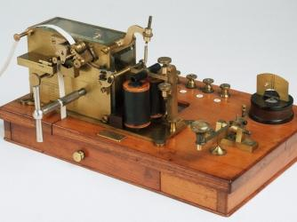
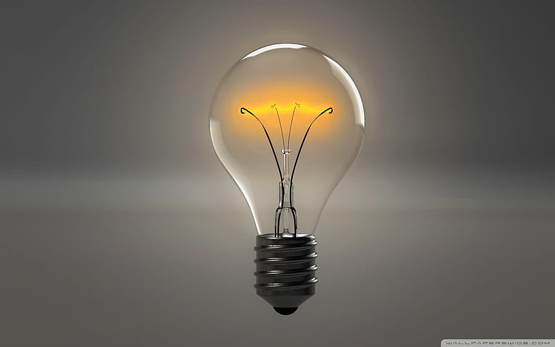

Inventos Destacados

1. El telégrafo cuádruplex
El telégrafo emite y recibe señales según un código de impulsos el eléctrico. El cuádruplex, creado en 1874, tenía la particularidad de permitir enviar y recibir cuatro mensajes telegráficos de manera simultánea..

2. Bombita de luz
El 27 de enero de 1880, Edison obtuvo la patente de una bombita incandescente. Tenía filamento de carbono en el interior de un receptáculo de cristal y duraba 40 horas.